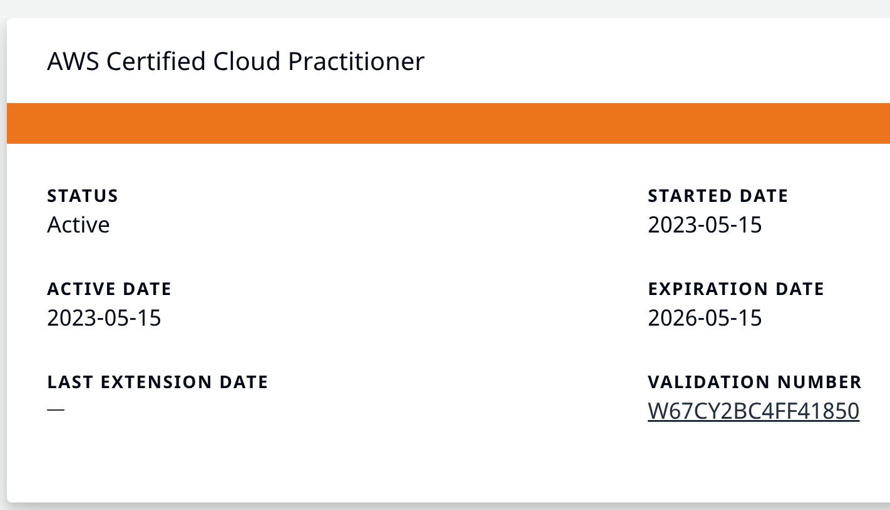

Summary:
Versatile IT professional with over three years of experience in system
administration, technical support, cloud infrastructure, and security
compliance. Expertise in Windows, Linux, and Mac environments, along with
enterprise-level Microsoft 365 and Azure AD administration. Proven success
in achieving and maintaining SOC2 Types I and II certifications,
implementing email security protocols (DKIM, DMARC, SPF), and managing
cloud-based infrastructure with AWS S3, EC2, and Elastic Beanstalk. Adept
at server patching, deploying new versions, and troubleshooting in
production and staging environments. Skilled in database management using
Microsoft SQL Server and SSMS, scripting with BASH, PowerShell, and
Python, and providing IT and developer support for web applications,
network security, and third-party API integration/troubleshooting.
Experienced in law enforcement IT support with CJIS compliance. Dedicated
to delivering efficient technical solutions while ensuring security best
practices, customer satisfaction, and clear communication.
Education:
Southeastern Louisiana University, Hammond, LA
Bachelor of Science in Computer Science, Fall 2017 GPA: Major 4.0,
Cumulative: 3.4
Skills:
Technical Skills:
- C#, .NET Core, ASP.NET (Basic familiarity)
- SQL (Basic familiarity)
- Agile Development (Familiar with principles)
- JIRA (Experience using for task management)
- Windows and Linux Administration
- Troubleshooting and Problem-Solving
- Communication (Written & Verbal)
- Incident handling and troubleshooting
-
Strong analytical and technical skills for evaluating systems and
resolving issues
-
Experienced in troubleshooting distributed Windows and client/server
environments
- Proficient in Windows Active Directory/Group Policy
- C#, .NET Core, ASP.NET (Basic familiarity)
- Project management/agile software development with Jira
- AWS infrastructure design with S3, EC2, and Elastic Beanstalk
-
Proficient in supporting Microsoft server systems, including Exchange,
Active Directory, DNS, DHCP, SCCM, IIS, and SQL Server.
- Remote/cloud systems maintenance and security
- Security monitoring and compliance
-
Technical documentation for help-desk and customer facing help articles
-
Proficient with multiple scripting languages (BASH, Powershell, Python,
Etc.)
-
Apple technology support for MacOS, iOS, and iPadOS (software and
hardware)
Customer Service & Communication:
- Strong customer service orientation
-
Detail-oriented with excellent verbal and written communication skills
- Ability to guide users through troubleshooting steps
- Professional and courteous interaction with end-users
Additional Skills:
- Experience in law enforcement IT support and CJIS compliance
- Self-motivated with the ability to work independently.
Experience:
CloudGavel / FusionStak, Baton Rouge, LA; remote/office; ~3 years (June
2021 – August 2024)
Systems admin, application and developer support technician,
systems/security analyst under CTO Sunil Shahi and Project Manager Bryan
Kirby
-
Achieved and maintained SOC2 types I and II security certification for
CloudGavel and FusionStak
-
Implemented DKIM, DMARC, and SPF DNS records for multiple domains
(company and application email security), ensuring safe email delivery
to employees and clients
-
Assisted in designing AWS infrastructure for FusionStak using AWS S3,
EC2, and Elastic Beanstalk
-
Managed CloudGavel servers primarily in patching, deploying new
versions, and troubleshooting
-
Moved CloudGavel web application service infrastructure from Windows
server service to Linux systemd unit
-
Queried production and staging data using Microsoft SQL Server and SSMS
for troubleshooting and reports
-
Trained help-desk employees to efficiently handle troubleshooting and
client/end user issues
-
Provided IT and developer support for CloudGavel, involving web
application support, network and cloud security, single sign-on (SSO)
functionality, AWS secrets manager, and 3rd party API integration and
API troubleshooting
-
Microsoft 365 and Azure AD Admin, including security, user, and
enterprise application and integration support
-
Coordinated remotely with the CloudGavel development team to deploy and
test the CloudGavel web application
-
On-boarding and off-boarding processes for company employees and
CloudGavel application end-users
Nortech Downtown, Hammond, LA; remote/office; ~2 years (July 2019 – May
2021)
Helpdesk / Apple technician under John Mougey, Supervisor
-
Remote and onsite management of client’s Windows servers, including
adding or removing users and group policy management
- Service manager
- Apple certified Mac and iPhone technician
- Network technician
- Remote support agent
Southeastern Louisiana University Department of Technology, Hammond, LA
(January 2016 - December 2016)
Student Intern under Matt Gill, System Administrator
-
Developed a Windows service in a Python environment for use with an
emergency message broadcast system over the campus network
- Installed wireless access points in dorms around campus
- Basic system administration and help desk duties
Certifications:
(click image to verify)
